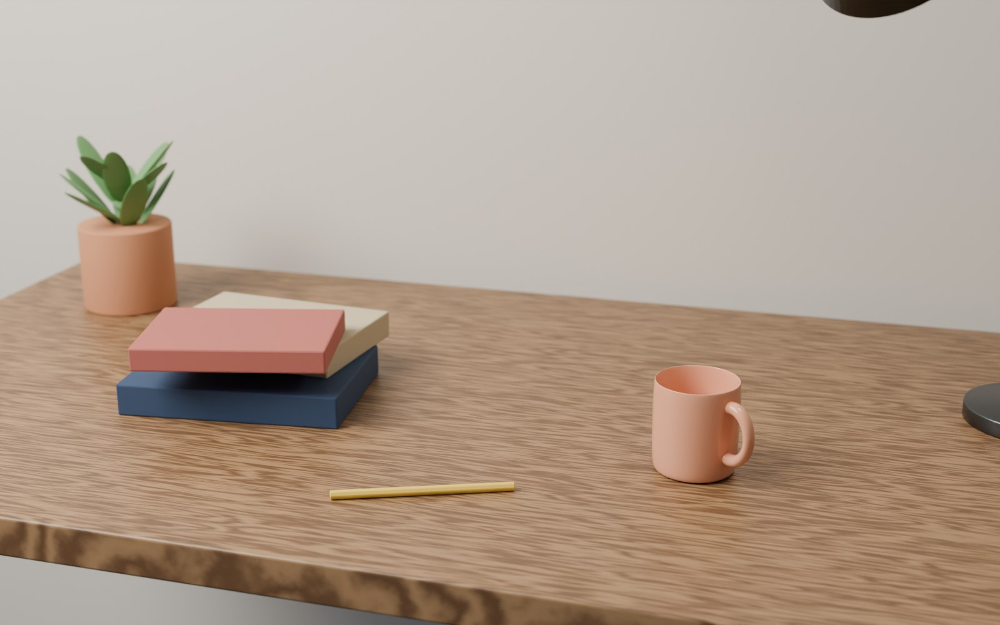
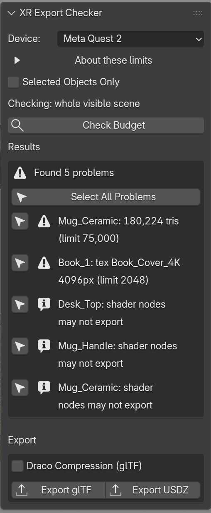
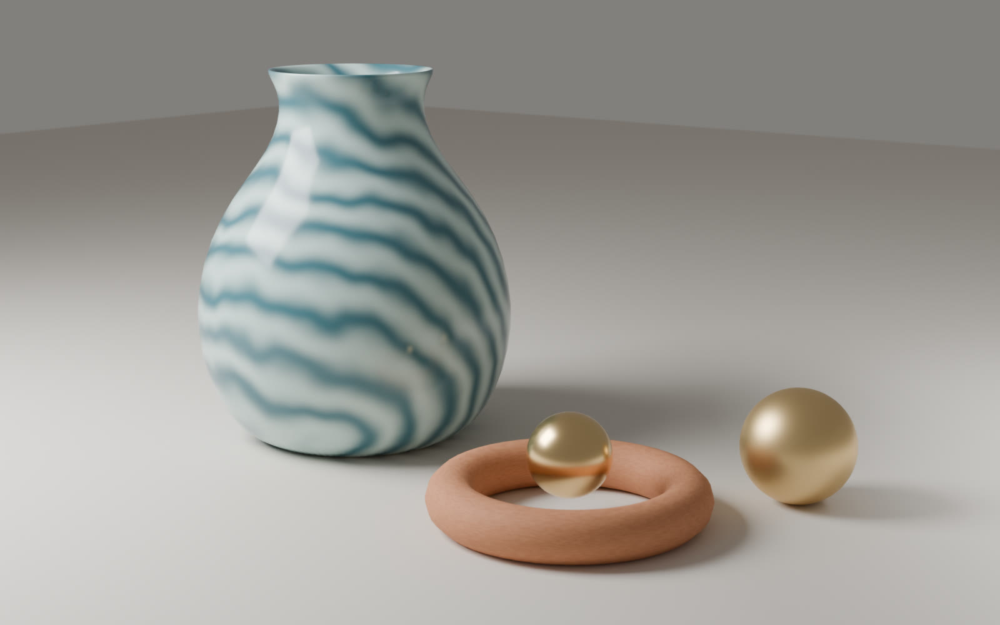
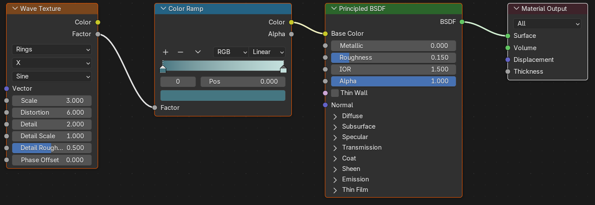

I make Blender tools for XR and 3D workflows, from Taiwan.
I decide what each product does, review the work, and test it before release. I use AI assistance for parts of the code; every release is checked and approved by me.
台灣的獨立開發者，製作 Blender 工具。
XR Export Checker for Blender
In development · planned for SuperhiveChecks a scene against triangle and texture budgets for Meta Quest 2, Meta Quest 3, Apple Vision Pro, or your own Custom limits, then exports glTF/GLB or USDZ from the same panel.


On this scene the check reports five problems: the mug at 180,224 triangles (limit 75,000), a 4096 px book cover (limit 2048), and three procedural materials (noise, wave, bump nodes) that glTF won't carry. Over-budget rows get an error icon; export notes get an info icon. Each row has a button that selects the object.
- Per-object and per-scene triangle limits, longest texture side, and texture memory (shown as an uncompressed upper bound)
- Presets are suggested values, not official Meta or Apple numbers; Custom lets you set your own
- Counts meshes, curves, text and collection instances after modifiers
- Export selected objects only; optional Draco compression for glTF
- Warnings for textures inside node groups, missing UV maps, missing image files, and objects USDZ can't carry
- Checks never block export; hidden objects are left out of both the check and the file
- Tested in Blender 4.2.23 LTS and 5.2.2 LTS · works offline, no data collection
Procedural material study
Blender render
